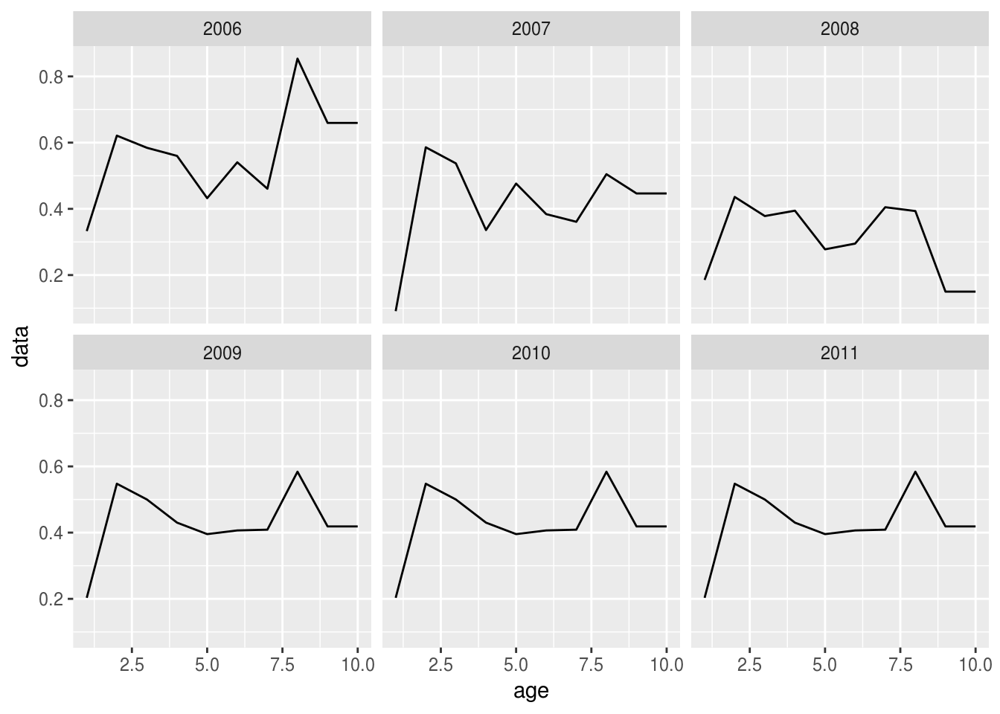
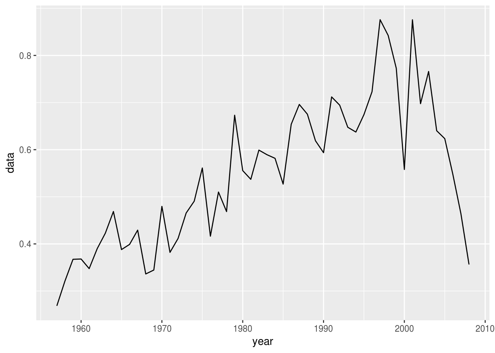
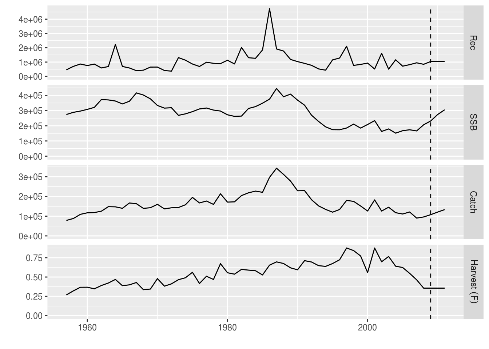
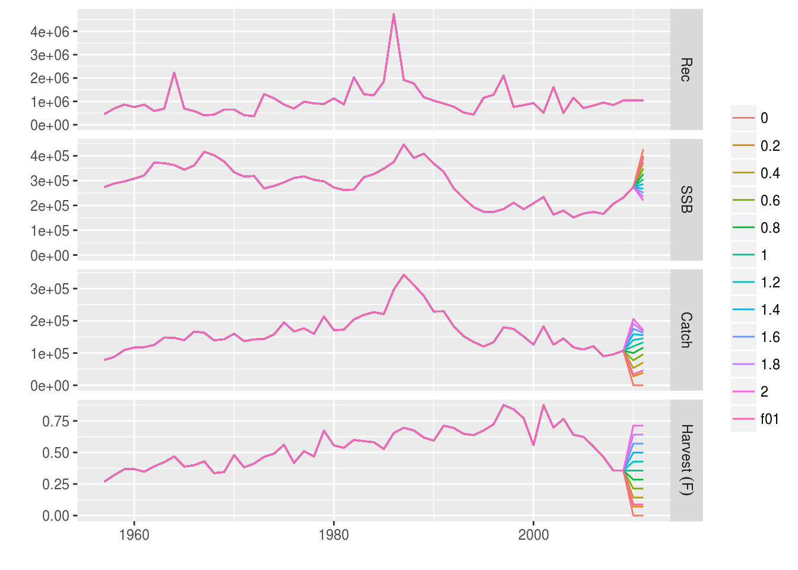

Short term forecasts help projecting the stock to forecast the implications of different management choices over a limited number of years. There are three necessary ingredients when projecting in FLR:
In FLR, the method for short term forecasts is called fwd(), which takes an FLStock, FLSR, and fwdControl.
To follow this tutorial you should have installed the following packages:
if you are using Windows, please use the 32-bit R version
You can do so as follows,
install.packages(c("FLAssess","FLBRP","ggplotFL"), repos="http://flr-project.org/R")The example used here is for the ple4 data that is available in FLR. This needs to be loaded first.
# Load the required packages
library(FLAssess)
library(FLash)
library(ggplotFL)
library(FLBRP)
# Load the data
data(ple4)
summary(ple4)An object of class "FLStock"
Name: Plaice in IV
Description: Imported from a VPA file. ( N:\Projecten\ICES WG\Demersale werkgroep [...]
Quant: age
Dims: age year unit season area iter
10 52 1 1 1 1
Range: min max pgroup minyear maxyear minfbar maxfbar
1 10 10 1957 2008 2 6
catch : [ 1 52 1 1 1 1 ], units = t
catch.n : [ 10 52 1 1 1 1 ], units = 10^3
catch.wt : [ 10 52 1 1 1 1 ], units = kg
discards : [ 1 52 1 1 1 1 ], units = t
discards.n : [ 10 52 1 1 1 1 ], units = 10^3
discards.wt : [ 10 52 1 1 1 1 ], units = kg
landings : [ 1 52 1 1 1 1 ], units = t
landings.n : [ 10 52 1 1 1 1 ], units = 10^3
landings.wt : [ 10 52 1 1 1 1 ], units = kg
stock : [ 1 52 1 1 1 1 ], units = t
stock.n : [ 10 52 1 1 1 1 ], units = 10^3
stock.wt : [ 10 52 1 1 1 1 ], units = kg
m : [ 10 52 1 1 1 1 ], units = m
mat : [ 10 52 1 1 1 1 ], units =
harvest : [ 10 52 1 1 1 1 ], units = f
harvest.spwn : [ 10 52 1 1 1 1 ], units =
m.spwn : [ 10 52 1 1 1 1 ], units = Our ple4 stock goes up to 2008, and in this example we want to make a 3-year projection, so we need to extend the stock by 3 years (nyears).
The projection will predict abundances in the future, but what will the future stock weights, maturity, natural mortality, etc. be like? The assumptions about these will affect the outcome of the projection. Rather than using window() or trim() that make all future data NA, we use the stf() function (short term forecast) that has several options that allow one to control the assumptions about the future stock parameters.
These assumptions specify how many years you want to average over to set future values. For example, wts.nyears is the number of years over which to calculate the *.wt, *.spwn, mat and m slots. By default this is set to 3 years. This is a fairly standard assumption for short term forecasts, i.e. the future weights at age will be the same as the average of the last 3 years. This assumes that what is going to happen in the next few years will be similar to what happened in the last few years.
A simple 3-year forecast for the weights, natural mortality, etc., assuming these are equal to their averages over the last 3 years, is done by:
maxyr_stk <- range(ple4)[["maxyear"]]
ple4_stf <- stf(ple4,nyears=3,wts.nyears=3, na.rm=TRUE)
maxyr_stf <- range(ple4_stf)[["maxyear"]]Previously, the stock went up to 2008. Now the stock goes up to 2011 and the future weights are equal to the average of the last three observed years, as can be observed from the last six years of the stock weights of the ple4_stf object.
range(ple4_stf) min max plusgroup minyear maxyear minfbar maxfbar
1 10 10 1957 2011 2 6 stock.wt(ple4_stf)[,ac((maxyr_stf-5):maxyr_stf)]An object of class "FLQuant"
An object of class "FLQuant"
, , unit = unique, season = all, area = unique
year
age 2006 2007 2008 2009 2010 2011
1 0.053000 0.048000 0.050000 0.050333 0.050333 0.050333
2 0.129000 0.093000 0.114000 0.112000 0.112000 0.112000
3 0.195000 0.239000 0.200000 0.211333 0.211333 0.211333
4 0.321000 0.241000 0.278000 0.280000 0.280000 0.280000
5 0.354000 0.337000 0.355000 0.348667 0.348667 0.348667
6 0.424000 0.394000 0.429000 0.415667 0.415667 0.415667
7 0.439000 0.458000 0.484000 0.460333 0.460333 0.460333
8 0.506000 0.412000 0.627000 0.515000 0.515000 0.515000
9 0.583000 0.526000 0.598000 0.569000 0.569000 0.569000
10 0.730673 0.548489 0.730672 0.669945 0.669945 0.669945
units: kg For maturity the same assumption (of the future being the same as the average of the last 3 years) holds, but those maturities were assumed constant already.
mat(ple4_stf)[,ac((maxyr_stf-5):maxyr_stf)]An object of class "FLQuant"
An object of class "FLQuant"
, , unit = unique, season = all, area = unique
year
age 2006 2007 2008 2009 2010 2011
1 0.0 0.0 0.0 0.0 0.0 0.0
2 0.5 0.5 0.5 0.5 0.5 0.5
3 0.5 0.5 0.5 0.5 0.5 0.5
4 1.0 1.0 1.0 1.0 1.0 1.0
5 1.0 1.0 1.0 1.0 1.0 1.0
6 1.0 1.0 1.0 1.0 1.0 1.0
7 1.0 1.0 1.0 1.0 1.0 1.0
8 1.0 1.0 1.0 1.0 1.0 1.0
9 1.0 1.0 1.0 1.0 1.0 1.0
10 1.0 1.0 1.0 1.0 1.0 1.0
units: Notice that the future fishing mortality has also been set (average of the last 3 years, by default).
ggplot(harvest(ple4_stf)[,ac((maxyr_stf-5):maxyr_stf)]) + geom_line(aes(x=age, y=data)) + facet_wrap(~year)
The stock numbers at age and the catch numbers at age are not forecast yet - this is what the fwd() function will perform later.
stock.n(ple4_stf)[,ac((maxyr_stf-5):maxyr_stf)]An object of class "FLQuant"
An object of class "FLQuant"
, , unit = unique, season = all, area = unique
year
age 2006 2007 2008 2009 2010 2011
1 820006.3 949341.2 844041.2 NA NA NA
2 554592.5 531914.3 784234.7 NA NA NA
3 422068.8 269655.1 267892.4 NA NA NA
4 88052.9 212889.2 142573.0 NA NA NA
5 136368.1 45514.9 137660.4 NA NA NA
6 17534.5 80086.2 25575.8 NA NA NA
7 16289.7 9240.6 49356.8 NA NA NA
8 4114.0 9297.5 5828.1 NA NA NA
9 2688.5 1585.1 5078.7 NA NA NA
10 2854.5 3660.1 6750.3 NA NA NA
units: 10^3 Meanwhile, the landings and discards are average forecast ratios (proportion of total catch) of what is discarded and what is landed over the last 3 years of data.
discards.n(ple4_stf)[,ac((maxyr_stf-5):maxyr_stf)]An object of class "FLQuant"
An object of class "FLQuant"
, , unit = unique, season = all, area = unique
year
age 2006 2007 2008 2009 2010 2011
1 2.2047e+05 7.7312e+04 1.3541e+05 9.9308e-01 9.9308e-01 9.9308e-01
2 2.2508e+05 2.0514e+05 2.5263e+05 9.3166e-01 9.3166e-01 9.3166e-01
3 1.1022e+05 6.9312e+04 3.7393e+04 5.7876e-01 5.7876e-01 5.7876e-01
4 1.0656e+04 1.0735e+04 6.2370e+03 2.0786e-01 2.0786e-01 2.0786e-01
5 3.0000e+03 1.4370e+03 2.2820e+03 7.5111e-02 7.5111e-02 7.5111e-02
6 4.1000e+02 7.1510e+03 5.1700e+02 1.4546e-01 1.4546e-01 1.4546e-01
7 7.5400e+02 2.0400e+02 8.8820e+03 2.5884e-01 2.5884e-01 2.5884e-01
8 1.9400e+02 1.6490e+03 8.9100e+02 3.5033e-01 3.5033e-01 3.5033e-01
9 0.0000e+00 0.0000e+00 0.0000e+00 0.0000e+00 0.0000e+00 0.0000e+00
10 0.0000e+00 0.0000e+00 0.0000e+00 0.0000e+00 0.0000e+00 0.0000e+00
units: 10^3 landings.n(ple4_stf)[,ac((maxyr_stf-5):maxyr_stf)]An object of class "FLQuant"
An object of class "FLQuant"
, , unit = unique, season = all, area = unique
year
age 2006 2007 2008 2009 2010 2011
1 3.5500e+02 1.2860e+03 3.8000e+02 6.9226e-03 6.9226e-03 6.9226e-03
2 1.8987e+04 1.9205e+04 1.0970e+04 6.8339e-02 6.8339e-02 6.8339e-02
3 6.7465e+04 3.7309e+04 4.2865e+04 4.2124e-01 4.2124e-01 4.2124e-01
4 2.5254e+04 4.7053e+04 3.7970e+04 7.9214e-01 7.9214e-01 7.9214e-01
5 4.2525e+04 1.4971e+04 2.9476e+04 9.2489e-01 9.2489e-01 9.2489e-01
6 6.5550e+03 1.7142e+04 5.7000e+03 8.5454e-01 8.5454e-01 8.5454e-01
7 4.9670e+03 2.4590e+03 6.7520e+03 7.4116e-01 7.4116e-01 7.4116e-01
8 2.0530e+03 1.8560e+03 9.1200e+02 6.4967e-01 6.4967e-01 6.4967e-01
9 1.2350e+03 5.4300e+02 6.7300e+02 1.0000e+00 1.0000e+00 1.0000e+00
10 1.3190e+03 1.2590e+03 8.9600e+02 1.0000e+00 1.0000e+00 1.0000e+00
units: 10^3 # Compare above landings.n for the forecast years with
yearMeans((landings.n(ple4)/(landings.n(ple4)+discards.n(ple4)))[,ac((maxyr_stk-2):maxyr_stk)])An object of class "FLQuant"
An object of class "FLQuant"
, , unit = unique, season = all, area = unique
year
age 1
1 0.0069226
2 0.0683387
3 0.4212371
4 0.7921356
5 0.9248890
6 0.8545368
7 0.7411596
8 0.6496718
9 1.0000000
10 1.0000000
units: NA # Furthermore, landings and discards proportions sum to 1
landings.n(ple4_stf)[,ac((maxyr_stf-2):maxyr_stf)] + discards.n(ple4_stf)[,ac((maxyr_stf-2):maxyr_stf)]An object of class "FLQuant"
An object of class "FLQuant"
, , unit = unique, season = all, area = unique
year
age 2009 2010 2011
1 1 1 1
2 1 1 1
3 1 1 1
4 1 1 1
5 1 1 1
6 1 1 1
7 1 1 1
8 1 1 1
9 1 1 1
10 1 1 1
units: 1000 A short term forecast does not use an SRR (in the traditional sense). Instead, it generally assumes that recruitment in the future is some mean (e.g. geometric mean) of the historic recruitments. However, we still need to have an SRR that contains this mean value, which is what we mimic for this example. First, we estimate the geometic mean recruitment, that we then add to an SRR object
mean_rec <- exp(mean(log(rec(ple4))))
ple4_sr <- as.FLSR(ple4, model="geomean")
params(ple4_sr)['a',] <- mean_rec
params(ple4_sr)An object of class "FLPar"
params
a
9e+05
units: NA The final thing we need to set up is the control object. This tells the projection what to do, i.e. what level of fishing mortality to use.
A standard scenario for a short term forecast is the ‘status quo’ scenario, assuming that the future mean fishing mortality will be the same as the mean of the last X years (X depending on the stock). We will set up this scenario as a simple example using the Fbar in the last year (2008), being 0.356 per year.
round(fbar(ple4),3)An object of class "FLQuant"
, , unit = unique, season = all, area = unique
year
age 1957 1958 1959 1960 1961
all 0.269 0.321 0.367 0.368 0.348
[ ... 42 years]
year
age 2004 2005 2006 2007 2008
all 0.640 0.623 0.548 0.464 0.356ggplot(fbar(ple4), aes(x=year,y=data)) + geom_line()
Below, we define the last year of the stock and the status quo Fbar fbar_SQ.
fbar_SQ <- mean(fbar(ple4)[,as.character(maxyr_stk)])Now we introduce the control object: fwdControl(). This takes 1 argument - a data.frame that sets:
Let’s make the data.frame
# Set the control object - year, quantity and value for the moment
ctrl_target <- data.frame(year = 2009:2011, quantity = "f", val = fbar_SQ)
ctrl_f <- fwdControl(ctrl_target)
ctrl_f
Target
year quantity min val max
1 2009 f NA 0.3563 NA
2 2010 f NA 0.3563 NA
3 2011 f NA 0.3563 NA
min val max
1 NA 0.35631 NA
2 NA 0.35631 NA
3 NA 0.35631 NAWe see that we have what looks like our ctrl_target, but now it has two more columns (min and max). There is another table underneath which is for uncertainty, but that we ignore here for the short term forecast examples.
Below we run a simple short term forecast (STF) with ‘status quo’ future fishing mortality. Remember we had to make assumptions about the future (weights, fishing mortality pattern, discard ratio, etc.).
This is done using fwd(), which takes three objects: the stock, the control object, the SRR. It returns an updated FLStock object. This update has forecast stock numbers, based on the recruitment, fishing mortality, and natural mortality assumptions. Because we now have stock numbers, we can calculate forecast ssb.
ple4_sq <- fwd(ple4_stf, ctrl = ctrl_f, sr = ple4_sr)Below, we check if the recruitment in the forecast stock indeed corresponds to the mean recruitment
mean_rec[1] 900370rec(ple4_sq)[,ac((maxyr_stf-5):maxyr_stf)]An object of class "FLQuant"
An object of class "FLQuant"
, , unit = unique, season = all, area = unique
year
age 2006 2007 2008 2009 2010 2011
1 820006 949341 844041 900370 900370 900370
units: NA Similarly, we check if the fbar in the forecast stock indeed corresponds to status quo fishing mortality.
round(fbar_SQ,3)[1] 0.356round(fbar(ple4_sq)[,ac((maxyr_stf-5):maxyr_stf)],3)An object of class "FLQuant"
An object of class "FLQuant"
, , unit = unique, season = all, area = unique
year
age 2006 2007 2008 2009 2010 2011
all 0.548 0.464 0.356 0.356 0.356 0.356
units: f The stock numbers are calculated using the recruitment and future mortality assumptions.
stock.n(ple4_sq)[,ac((maxyr_stf-5):maxyr_stf)]An object of class "FLQuant"
An object of class "FLQuant"
, , unit = unique, season = all, area = unique
year
age 2006 2007 2008 2009 2010 2011
1 820006.3 949341.2 844041.2 900369.9 900369.9 900369.9
2 554592.5 531914.3 784234.7 634556.4 695149.1 695149.1
3 422068.8 269655.1 267892.4 458861.8 374263.6 410001.4
4 88052.9 212889.2 142573.0 166055.3 280909.2 229119.3
5 136368.1 45514.9 137660.4 86954.4 107361.5 181619.3
6 17534.5 80086.2 25575.8 94351.2 57762.5 71318.6
7 16289.7 9240.6 49356.8 17228.2 62135.0 38039.5
8 4114.0 9297.5 5828.1 29788.4 11325.1 40844.9
9 2688.5 1585.1 5078.7 3558.4 17078.0 6492.8
10 2854.5 3660.1 6750.3 9212.2 8330.8 16575.1
units: NA Note that the future harvest slot is different from the harvest from the one we set up, but that the selection pattern is the same: F at age has been multiplied by a constant value to give us the target Fbar value.
round(harvest(ple4_stf)[,ac((maxyr_stf-2):maxyr_stf)],3)An object of class "FLQuant"
An object of class "FLQuant"
, , unit = unique, season = all, area = unique
year
age 2009 2010 2011
1 0.203 0.203 0.203
2 0.548 0.548 0.548
3 0.500 0.500 0.500
4 0.430 0.430 0.430
5 0.395 0.395 0.395
6 0.407 0.407 0.407
7 0.409 0.409 0.409
8 0.584 0.584 0.584
9 0.419 0.419 0.419
10 0.419 0.419 0.419
units: f round(harvest(ple4_sq)[,ac((maxyr_stf-2):maxyr_stf)],3)An object of class "FLQuant"
An object of class "FLQuant"
, , unit = unique, season = all, area = unique
year
age 2009 2010 2011
1 0.159 0.159 0.159
2 0.428 0.428 0.428
3 0.391 0.391 0.391
4 0.336 0.336 0.336
5 0.309 0.309 0.309
6 0.318 0.318 0.318
7 0.320 0.320 0.320
8 0.456 0.456 0.456
9 0.327 0.327 0.327
10 0.327 0.327 0.327
units: f harvest(ple4_stf)[,ac((maxyr_stf-2):maxyr_stf)] / harvest(ple4_sq)[,ac((maxyr_stf-2):maxyr_stf)]An object of class "FLQuant"
An object of class "FLQuant"
, , unit = unique, season = all, area = unique
year
age 2009 2010 2011
1 1.2797 1.2797 1.2797
2 1.2797 1.2797 1.2797
3 1.2797 1.2797 1.2797
4 1.2797 1.2797 1.2797
5 1.2797 1.2797 1.2797
6 1.2797 1.2797 1.2797
7 1.2797 1.2797 1.2797
8 1.2797 1.2797 1.2797
9 1.2797 1.2797 1.2797
10 1.2797 1.2797 1.2797
units: NA The catch numbers come from the predicted abundance and harvest rates using the Baranov equation. The catches are then split into landings and discards using the average ratios computed by stf().
landings.n(ple4_sq)[,ac((maxyr_stf-5):maxyr_stf)]An object of class "FLQuant"
An object of class "FLQuant"
, , unit = unique, season = all, area = unique
year
age 2006 2007 2008 2009 2010 2011
1 355.00 1286.00 380.00 871.47 871.47 871.47
2 18987.00 19205.00 10970.00 14418.91 15795.74 15795.74
3 67465.00 37309.00 42865.00 59684.58 48680.81 53329.26
4 25254.00 47053.00 37970.00 35832.72 60616.80 49441.17
5 42525.00 14971.00 29476.00 20398.74 25186.06 42606.28
6 6555.00 17142.00 5700.00 20939.33 12819.21 15827.72
7 4967.00 2459.00 6752.00 3332.27 12018.13 7357.58
8 2053.00 1856.00 912.00 6773.26 2575.09 9287.29
9 1235.00 543.00 673.00 947.53 4547.50 1728.89
10 1319.00 1259.00 896.00 2453.01 2218.31 4413.60
units: NA discards.n(ple4_sq)[,ac((maxyr_stf-5):maxyr_stf)]An object of class "FLQuant"
An object of class "FLQuant"
, , unit = unique, season = all, area = unique
year
age 2006 2007 2008 2009 2010 2011
1 220473.0 77312.0 135406.0 125015.3 125015.3 125015.3
2 225077.0 205140.0 252629.0 196572.8 215343.2 215343.2
3 110215.0 69312.0 37393.0 82004.2 66885.5 73272.3
4 10656.0 10735.0 6237.0 9402.9 15906.5 12973.9
5 3000.0 1437.0 2282.0 1656.6 2045.4 3460.1
6 410.0 7151.0 517.0 3564.4 2182.1 2694.3
7 754.0 204.0 8882.0 1163.8 4197.2 2569.5
8 194.0 1649.0 891.0 3652.4 1388.6 5008.1
9 0.0 0.0 0.0 0.0 0.0 0.0
10 0.0 0.0 0.0 0.0 0.0 0.0
units: NA We can see the projection using a plot here
plot(ple4_sq) + geom_vline(lty=2,xintercept=an(ISOdate(maxyr_stk+1,1,1)))
Typically when running STF you explore several different future F scenarios. The scenarios are based on ‘F status quo’, which we calculated above as the mean F of the last X years.
For a 3 year STF the F pattern is:
Note that year 1 is typically called the ‘intermediate year’ (in ICES, this would be the year the Expert Group meets to run the assessment, and status quo F for the intermediate year is a common assumption), and the fbar_multiplier is the same for years 2 and 3
We are going to run several STFs with different values for the fbar_multiplier
fbar_multiplier <- seq(from = 0, to = 2, by = 0.2)Next we are going to build a data.frame that creates these scenarios. Each column in the dataframe is a year, each row is a scenario. Note that if you project for more than 3 years you will need to add more columns / years to the matrix
fbar_scenarios <- cbind(rep(fbar_SQ,length(fbar_multiplier)),
fbar_multiplier*fbar_SQ,
fbar_multiplier*fbar_SQ)Another scenario we are interested in is \(F_{0.1}\). We can calculate this using FLBRP (or maybe you already have a value).
f01 <- c(refpts(brp(FLBRP(ple4)))["f0.1","harvest"])
# Add the F0.1 scenario as a final scenario
fbar_scenarios <- rbind(fbar_scenarios, c(fbar_SQ,f01,f01))# Add some names
colnames(fbar_scenarios) <- c("2009","2010","2011")
rownames(fbar_scenarios) <- c(fbar_multiplier, "f01")
fbar_scenarios| 2009 | 2010 | 2011 | |
|---|---|---|---|
| 0 | 0.3563 | 0.0000 | 0.0000 |
| 0.2 | 0.3563 | 0.0713 | 0.0713 |
| 0.4 | 0.3563 | 0.1425 | 0.1425 |
| 0.6 | 0.3563 | 0.2138 | 0.2138 |
| 0.8 | 0.3563 | 0.2850 | 0.2850 |
| 1 | 0.3563 | 0.3563 | 0.3563 |
| 1.2 | 0.3563 | 0.4276 | 0.4276 |
| 1.4 | 0.3563 | 0.4988 | 0.4988 |
| 1.6 | 0.3563 | 0.5701 | 0.5701 |
| 1.8 | 0.3563 | 0.6414 | 0.6414 |
| 2 | 0.3563 | 0.7126 | 0.7126 |
| f01 | 0.3563 | 0.0876 | 0.0876 |
There are various results we want to extract from the STF, like predicted Catch, SSB and the relative change in these. First, make an empty matrix in which to store the results.
stf_results <- matrix(NA,nrow = nrow(fbar_scenarios),ncol = 8)
# Set some column names
colnames(stf_results) <- c('Fbar',
paste0('Catch',maxyr_stk+1),
paste0('Catch',maxyr_stk+2),
paste0('Catch',maxyr_stk+3),
paste0('SSB',maxyr_stk+2),
paste0('SSB',maxyr_stk+3),
paste0('SSB_change_',maxyr_stk+2,'-',maxyr_stk+3,'(%)'),
paste0('Catch_change_',maxyr_stk,'-',maxyr_stk+2,'(%)'))# Set up an FLStocks object to store the resulting FLStock each time
stk_stf <- FLStocks()
# Loop over the scenarios (each row in the fbar_scenarios table)
for (scenario in 1:nrow(fbar_scenarios)) {
cat("Scenario: ", scenario, "\n")
flush.console()
# Make a target object with F values for that scenario
# Set the control object - year, quantity and value for the moment
ctrl_target <- data.frame(year = (maxyr_stf-2):maxyr_stf,
quantity = "f",
val = fbar_scenarios[scenario,])
# ctrl_target
ctrl_f <- fwdControl(ctrl_target)
# Run the forward projection. We could include an additional argument, maxF.
# By default the value of maxF is 2.0. It could be increased to 10.0, say,
# so that F is less limited, and the bound is not hit (not a problem here).
ple4_fwd <- fwd(ple4_stf, ctrl = ctrl_f, sr = ple4_sr)#, maxF = 10.0)
## Check it has worked - uncomment out to check scenario by scenario
# plot(ple4_fwd[,ac(2001:2011)])
# Store the result - if you want to, comment out if unnecessary
stk_stf[[as.character(scenario)]] <- ple4_fwd
# Fill results table
stf_results[scenario,1] <- round(fbar(ple4_fwd)[,ac(2011)],3) # final stf year
stf_results[scenario,2] <- catch(ple4_fwd)[,ac(maxyr_stk+1)] # 1st stf year
stf_results[scenario,3] <- catch(ple4_fwd)[,ac(maxyr_stk+2)] # 2nd stf year
stf_results[scenario,4] <- catch(ple4_fwd)[,ac(maxyr_stk+3)] # final stf year
stf_results[scenario,5] <- ssb(ple4_fwd)[,ac(maxyr_stk+2)] # 2nd stf year
stf_results[scenario,6] <- ssb(ple4_fwd)[,ac(maxyr_stk+3)] # final stf year
# change in ssb in last two stf years
stf_results[scenario,7] <- round((ssb(ple4_fwd)[,ac(maxyr_stk+3)]-ssb(ple4_fwd)[,ac(maxyr_stk+2)])/
ssb(ple4_fwd)[,ac(maxyr_stk+2)]*100,1)
# change in catch from true year, to 2nd to last stf year
stf_results[scenario,8] <- round((catch(ple4_fwd)[,ac(maxyr_stk+2)]-catch(ple4_fwd)[,ac(maxyr_stk)])/
catch(ple4_fwd)[,ac(maxyr_stk)]*100,1)
}
# Give the FLStocks object some names
names(stk_stf) <- rownames(fbar_scenarios)
# Plotting
plot(stk_stf) The different scenarios are plotted above. The table of results is given below.
stf_results| Fbar | Catch2009 | Catch2010 | Catch2011 | SSB2010 | SSB2011 | SSB_change_2010-2011(%) | Catch_change_2008-2010(%) |
|---|---|---|---|---|---|---|---|
| 0.000 | 106368 | 0 | 0 | 268307 | 410158 | 52.9 | -100.0 |
| 0.071 | 106368 | 26377 | 36153 | 268307 | 383213 | 42.8 | -72.5 |
| 0.143 | 106368 | 50963 | 65598 | 268307 | 358124 | 33.5 | -46.9 |
| 0.214 | 106368 | 73885 | 89367 | 268307 | 334758 | 24.8 | -23.1 |
| 0.285 | 106368 | 95259 | 108345 | 268307 | 312995 | 16.7 | -0.8 |
| 0.356 | 106368 | 115195 | 123285 | 268307 | 292719 | 9.1 | 19.9 |
| 0.428 | 106368 | 133794 | 134831 | 268307 | 273827 | 2.1 | 39.3 |
| 0.499 | 106368 | 151151 | 143535 | 268307 | 256221 | -4.5 | 57.4 |
| 0.570 | 106368 | 167352 | 149864 | 268307 | 239810 | -10.6 | 74.3 |
| 0.641 | 106368 | 182478 | 154218 | 268307 | 224511 | -16.3 | 90.0 |
| 0.713 | 106368 | 196604 | 156937 | 268307 | 210245 | -21.6 | 104.7 |
| 0.088 | 106368 | 32168 | 43457 | 268307 | 377302 | 40.6 | -66.5 |
This document is licensed under the Creative Commons Attribution-ShareAlike 4.0 International license.